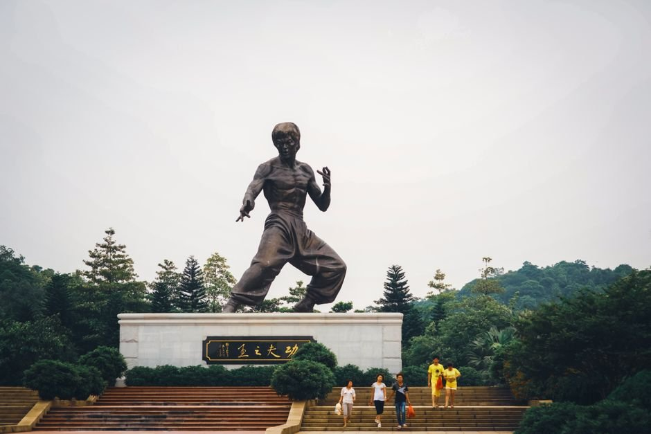

新闻 · 2026-11-27 18:00
探索用 AI 在大银幕“复活”李小龙，其女儿李香凝称像是在走钢丝
李香凝在新加坡金狮大赏论坛谈及用AI技术‘复活’父亲李小龙，称此举如走钢丝，需平衡技术与人性，强调父亲重视真实与真诚，反对仅为利润滥用AI。她与导演武贝正探索相关影视项目，但体裁、平台未定，目标面向新时代年轻人。

来源与核验
单一信源报道，未交叉核实
李香凝在新加坡金狮大赏论坛谈及用AI技术‘复活’父亲李小龙，称此举如走钢丝，需平衡技术与人性，强调父亲重视真实与真诚，反对仅为利润滥用AI。她与导演武贝正探索相关影视项目，但体裁、平台未定，目标面向新时代年轻人。

单一信源报道，未交叉核实